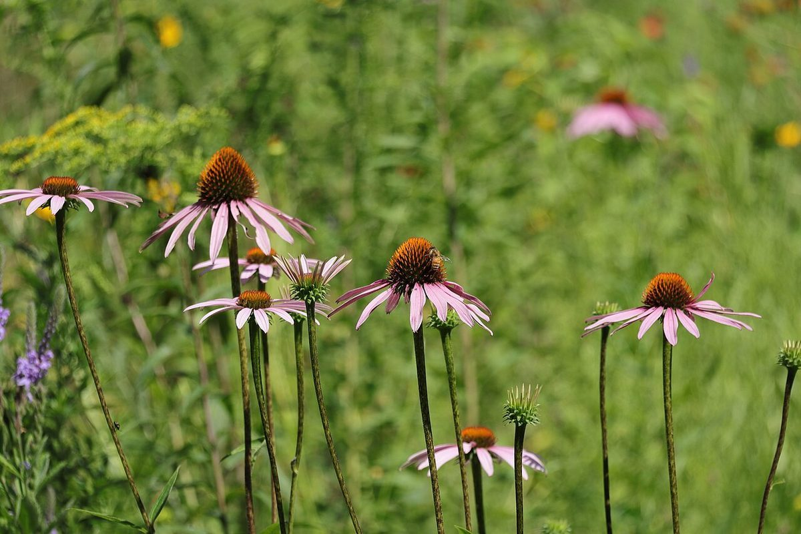
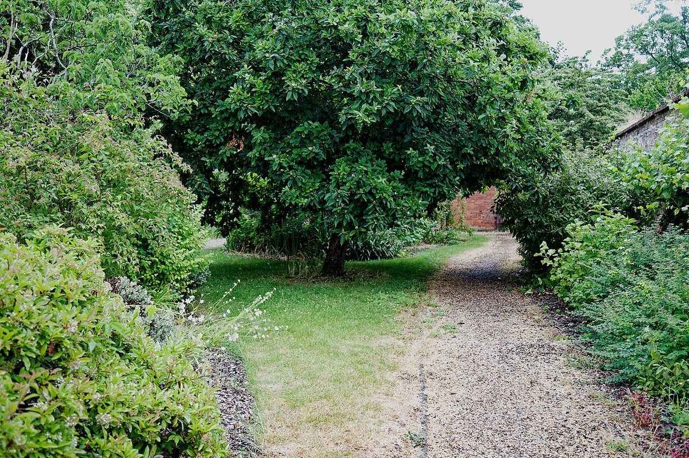

仕事や用事の合間に、ふらっと立ち寄れる場所になったらいいなと思います。
VOICE
口コミ
このページの口コミは、実際のお客様の声ではありません。「こんな声が届いたらいいな」という願いをもとにしたイメージ例です。
営業日やメニューがInstagramで分かると、出かける前に安心できたらいいなと思います。
鳴門に来たときの楽しみがひとつ増えたらいいなと思います。


VOICE
このページの口コミは、実際のお客様の声ではありません。「こんな声が届いたらいいな」という願いをもとにしたイメージ例です。
仕事や用事の合間に、ふらっと立ち寄れる場所になったらいいなと思います。
営業日やメニューがInstagramで分かると、出かける前に安心できたらいいなと思います。
鳴門に来たときの楽しみがひとつ増えたらいいなと思います。


掲載写真はフリー素材のイメージで、店舗の実際の写真ではありません。日本国内のほか、海外で撮影されたものや撮影地が不明なものを含みます。
電話する088-685-6788